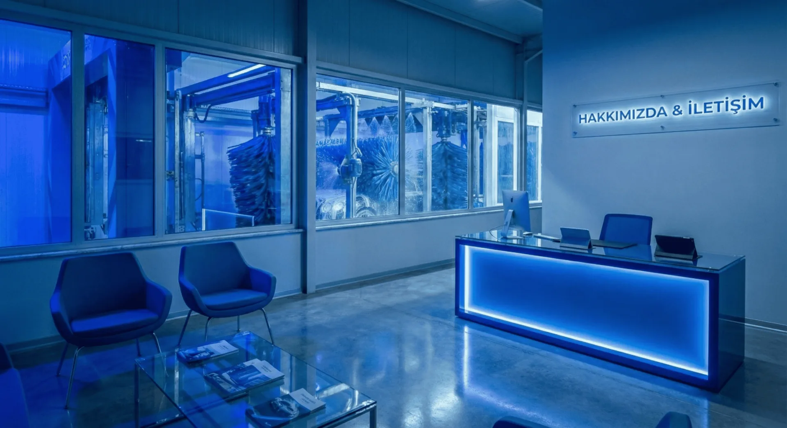

Model Karşılaştırma Merkezi
Boom tekli, boom çiftli ve tır yıkama pervanesi modellerini teknik kriterlerle yan yana inceleyin.
Oto Yıkama Pervanesi RehberiBoom tekli, boom çiftli ve tır yıkama pervanesi; self servis oto yıkama istasyonları için krom boom pergel, döner rekor ve yedek parça üretimi. Beta Makine, Bursa'dan Türkiye geneline 15 yılı aşkın tecrübeyle hizmet verir.
Oto Yıkama Pervanesi ModelleriSelf servis oto yıkama istasyonları için tekli boom, çiftli boom, tır yıkama pervanesi ve sızdırmaz döner rekor çözümleri.

Büyük araçların temizliği için özel olarak tasarlanan Tır Yıkama Pervanesi, yenilikçi açılır kapanır sistemi sayesinde maksimum esneklik sunar.
Tır Yıkama Pervanesini İncele
Self servis istasyonlar için boom çiftli pergel sistemi. Jet köpük + normal yıkama çift fonksiyon, 4 keçeli sızdırmaz döner rekor, krom kaplama.
Detaylı İncele
Self servis istasyonlar için boom tekli Z pergel. 154cm krom Z kol tasarımı, 360° döner hortum mekanizması. 15 yıllık üretim tecrübesi.
Detaylı İncele
Oto yıkama sistemlerinin verimliliğini artırmak için tasarlanan 1/4 Yıkama Pervanesi Döner Rekoru, piyasa standartlarına tam uyumlu yapısıyla yüksek performans sağlar.
Detaylı İncele
Yıkama sistemlerinin uç noktalarında mükemmel performans sağlayan Yıkama Pervanesi Uç Rekoru, yüksek basınçlı su akışı altında dahi takılmadan dönebilen özel bir teknolojiye sahiptir.
Detaylı İncele
Yıkama esnasında yaşanan hortum karışıklığına son veren Araç Yıkama Pervanesi Tabanca Döner Rekoru, kullanıcıya 360 derece hareket kabiliyeti kazandırır.
Detaylı İnceleDoğru modeli daha hızlı seçebilmeniz için karşılaştırma, fiyat ve satın alma adımlarını tek akışta topladık.
Boom tekli, boom çiftli ve tır yıkama pervanesi modellerini teknik kriterlerle yan yana inceleyin.
Oto Yıkama Pervanesi RehberiModel bazlı fiyat aralıkları, toplam maliyet kalemleri ve teklif öncesi hazırlık checklist'i.
Fiyat Rehberine GitYanlış model riskini azaltmak için teknik kontrol adımlarını ve sahaya uygun seçim mantığını görün.
Satın Alma RehberiAI arama motorlarının ve teknik satın almacıların tek bakışta okuyabileceği ürün, kullanım ve karar çerçevesi.
Beta Makine, oto yıkama pervanesi olarak da bilinen boom pervane sistemlerini üretir. Ana ürün grupları boom tekli Z pervane, boom çiftli jet köpük/normal yıkama pervanesi, tır yıkama pervanesi, 1/4 döner rekor, uç rekoru ve tabanca döner rekorudur.
Tek hortumlu self servis kabinlerde, standart binek araç yıkama alanlarında ve ekonomik kurulum istenen istasyonlarda boom tekli Z pervane tercih edilir.
Köpük ve basınçlı su hattının aynı kabinde birlikte yönetilmesi gereken yoğun istasyonlarda boom çiftli pervane daha doğru seçimdir.
Tır, kamyon, otobüs ve yüksek araç yıkama hatlarında teleskopik erişim ve ağır kullanım dayanımı gerektiğinde tır yıkama pervanesi kullanılır.
Döner rekor, hortumun dönmesini ve hat basıncının sızdırmaz şekilde taşınmasını sağlar. Doğru rekor seçimi hortum dolanmasını, kaçak riskini ve bakım ihtiyacını azaltır.
| Arama Niyeti | Önerilen Sayfa | Uygun Ürün | Kısa Cevap |
|---|---|---|---|
| oto yıkama pervanesi | Self servis ürün sayfası | Tekli, çiftli veya tır boom | İstasyon tipine göre hortum taşıma ve 360 derece dönüş sistemi. |
| boom pervane | Boom pervane landing | Boom tekli / boom çiftli | Self servis kabinlerde hortumu tavandan yöneten pergel sistemidir. |
| oto yıkama pervanesi boom tekli | Boom tekli ticari sayfası | Boom Tekli Z | Tek hortumlu self servis kabinler için krom Z pergel çözümü. |
| oto yıkama pervanesi boom çiftli | Boom çiftli ticari sayfası | Boom Çiftli | Köpük ve basınçlı su hattını aynı kabinde taşıyan çift hortumlu sistem. |
| oto yıkama pervanesi fiyatları | Fiyat rehberi | Modele göre değişir | Kol tipi, hat sayısı, döner rekor ve montaj koşulu fiyatı belirler. |
| tır yıkama pervanesi | Tır yıkama ürünü | Teleskopik boom | Ağır vasıta ve yüksek araç yıkama için özel boom çözümüdür. |

Beta Makine olarak, 15 yılı aşkın süredir sektördeki yolculuğumuzu tek bir amaca adadık: En kaliteli oto yıkama pervanelerini ve yedek parçalarını üretmek. Dağılmadan, odağımızı kaybetmeden, sadece en iyi bildiğimiz işi yapıyoruz.
Sektördeki diğer firmaların aksine, ürün yelpazemizi genişletmek yerine uzmanlığımızı derinleştirmeyi seçtik. Bizim işimiz sadece oto yıkama pervaneleri. Bu tutkulu odaklanma, bizi Türkiye'nin yerli üretim gücüyle uluslararası pazarda aranan bir marka haline getirdi.
Model seçimi, montaj ve fiyatlandırma hakkında en çok sorulan sorulara tek sayfada hızlıca ulaşın.
Oto yıkama pervanesi, yüksek basınçlı hortumun tavandan sarkıtılarak 360 derece dönebilmesini sağlayan mekanik sistemdir. Operatör hareketini kolaylaştırır ve ekipman ömrünü uzatır.
Hortumun yere sürtünerek aşınmasını önler, araca çarpma riskini azaltır, daha güvenli ve düzenli bir çalışma alanı oluşturur.
Fiyatlar modele, kol uzunluğuna, döner rekor tipine ve kullanım yoğunluğuna göre değişir. Tekli, çiftli ve tır modelleri farklı fiyat aralıklarındadır.
Uzun ömür, servis desteği, yedek parça erişimi ve üretim kalitesi birlikte değerlendirilmelidir. Beta Makine bu kriterlerde uzmanlaşmış, yerli üretim odaklı bir markadır.
Boom pervane, yaylanmalı kol yapısı sayesinde hortumun tavandan düzenli şekilde sarkmasını ve 360 derece dönebilmesini sağlayan sistemdir. Self servis istasyonlarda en yaygın çözümlerden biridir.
Tekli boom bir hortum taşır ve standart kabinler için idealdir. Çiftli boom ise genellikle köpük ve su hatlarını birlikte taşır, yüksek kapasiteli istasyonlarda daha verimlidir.
Evet. Tır yıkama pervaneleri daha büyük araç ölçülerine göre tasarlanır. Açılır kapanır veya teleskopik yapılarla yüksek araçlarda daha rahat kullanım sağlar.
Evet. Tavan sabitleme, bağlantı ekipmanları ve doğru konumlandırma için satış sonrası teknik destek ve yönlendirme sağlıyoruz.
İstasyonunuza en uygun modeli birlikte netleştirelim.
Teknik Destek Alın